library(MASS)
library(ggplot2)
library(dplyr)
library(tidyr)
library(corrplot)
library(epiDisplay)
library(mice)
library(caret)
library(dlookr)HW1
Problem 1 - Boston housing dataset
Import package and load Boston dataset
data(Boston)Boston dataset data dictionary
?Bostonnrow(Boston)[1] 506ncol(Boston)[1] 141a) How many rows are in this Boston data set? How many columns? What do the rows and columns represent?
Rows: 506
Columns: 14
Column descriptions:
crim - per capita crime rate by town.
zn - proportion of residential land zoned for lots over 25,000 sq.ft.
indus - proportion of non-retail business acres per town.
chas - Charles River dummy variable (= 1 if tract bounds river; 0 otherwise).
nox - nitrogen oxides concentration (parts per 10 million).
rm - average number of rooms per dwelling.
age - proportion of owner-occupied units built prior to 1940.
dis - weighted mean of distances to five Boston employment centres.
rad - index of accessibility to radial highways.
tax - full-value property-tax rate per $10,000.
ptratio - pupil-teacher ratio by town.
black - 1000(Bk−0.63)² Bk is the proportion of blacks by town.
lstat - lower status of the population (percent).
medv - median value of owner-occupied homes in $1000s.
1b) Make some pairwise scatterplots of the predictors (columns) in this data set. Describe your findings.
str(Boston)'data.frame': 506 obs. of 14 variables:
$ crim : num 0.00632 0.02731 0.02729 0.03237 0.06905 ...
$ zn : num 18 0 0 0 0 0 12.5 12.5 12.5 12.5 ...
$ indus : num 2.31 7.07 7.07 2.18 2.18 2.18 7.87 7.87 7.87 7.87 ...
$ chas : int 0 0 0 0 0 0 0 0 0 0 ...
$ nox : num 0.538 0.469 0.469 0.458 0.458 0.458 0.524 0.524 0.524 0.524 ...
$ rm : num 6.58 6.42 7.18 7 7.15 ...
$ age : num 65.2 78.9 61.1 45.8 54.2 58.7 66.6 96.1 100 85.9 ...
$ dis : num 4.09 4.97 4.97 6.06 6.06 ...
$ rad : int 1 2 2 3 3 3 5 5 5 5 ...
$ tax : num 296 242 242 222 222 222 311 311 311 311 ...
$ ptratio: num 15.3 17.8 17.8 18.7 18.7 18.7 15.2 15.2 15.2 15.2 ...
$ black : num 397 397 393 395 397 ...
$ lstat : num 4.98 9.14 4.03 2.94 5.33 ...
$ medv : num 24 21.6 34.7 33.4 36.2 28.7 22.9 27.1 16.5 18.9 ...Boston$chas = as.numeric(Boston$chas)
Boston$rad = as.numeric(Boston$rad)
converted_dtypes = str(subset(Boston, select = c("chas", "rad")))'data.frame': 506 obs. of 2 variables:
$ chas: num 0 0 0 0 0 0 0 0 0 0 ...
$ rad : num 1 2 2 3 3 3 5 5 5 5 ...pairs(Boston,
pch = 21,
col = 'blue',
bg = 'lightblue',
gap = 0,
labels = colnames(Boston),
)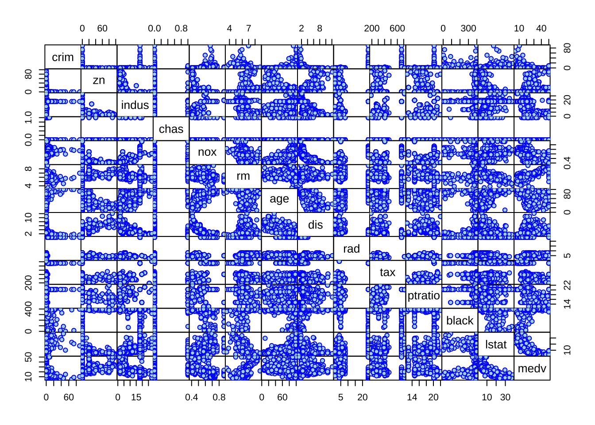
corrplot(round(cor(Boston),2),
diag = TRUE,
sig.level = 0.5,
method = "pie",
insig = "blank",
tl.col = "black",
tl.srt = 45,
type = "upper")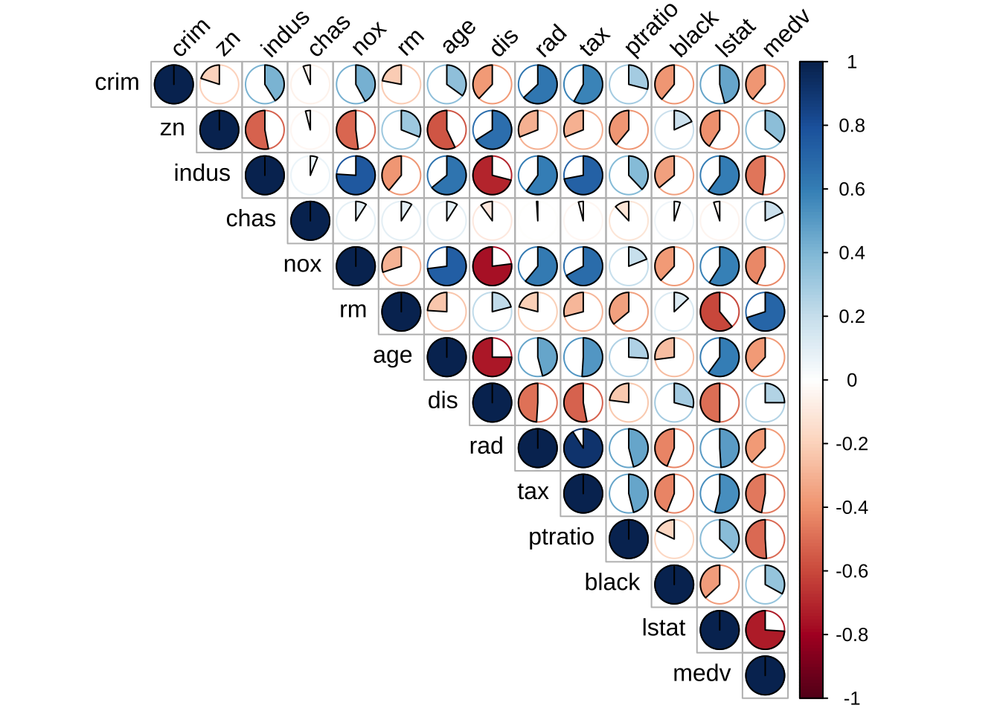
The scatter and correlation plot help illustrate correlations between two predictors. Our plots identified that predictor indus has been strong positive correlations with other predictors, such as nox, age, rad, tax, and lstat. They also identified that chas has pretty much no correlation to any of the other predictors. Other than these findings, there seems to be no other strong patterns between the relationships of two variables. ### 1c) Are any of the predictors associated with per capita crime rate? If so, explain the relationship.
cor(Boston$crim, Boston[-1]) zn indus chas nox rm age dis
[1,] -0.2004692 0.4065834 -0.05589158 0.4209717 -0.2192467 0.3527343 -0.3796701
rad tax ptratio black lstat medv
[1,] 0.6255051 0.5827643 0.2899456 -0.3850639 0.4556215 -0.3883046Predictors with a strong positive correlation with per capita crime rate are rad (index of accessibility to radial highways) and tax (property tax rate > $10,000). Moderate positive correlations can be seen for variables indus, nox, age, and lstat. Moderate negative correlations: dis, black, and medv. ### 1d) Do any of the census tracts of Boston appear to have particularly high crime rates? Tax rates? Comment on the range of each predictor.
cat("Range crime rates:\n")Range crime rates:range(Boston$crim)[1] 0.00632 88.97620cat("Range tax rates:\n")Range tax rates:range(Boston$tax)[1] 187 711high_crime_suburbs <- subset(Boston, crim > 40)
cat("Suburbs with high crime rates:\n")Suburbs with high crime rates:high_crime_suburbs crim zn indus chas nox rm age dis rad tax ptratio black lstat
381 88.9762 0 18.1 0 0.671 6.968 91.9 1.4165 24 666 20.2 396.90 17.21
405 41.5292 0 18.1 0 0.693 5.531 85.4 1.6074 24 666 20.2 329.46 27.38
406 67.9208 0 18.1 0 0.693 5.683 100.0 1.4254 24 666 20.2 384.97 22.98
411 51.1358 0 18.1 0 0.597 5.757 100.0 1.4130 24 666 20.2 2.60 10.11
415 45.7461 0 18.1 0 0.693 4.519 100.0 1.6582 24 666 20.2 88.27 36.98
419 73.5341 0 18.1 0 0.679 5.957 100.0 1.8026 24 666 20.2 16.45 20.62
medv
381 10.4
405 8.5
406 5.0
411 15.0
415 7.0
419 8.8high_tax_suburbs <- subset(Boston, tax > 600)
cat("Suburbs with high tax rates:\n")Suburbs with high tax rates:high_tax_suburbs crim zn indus chas nox rm age dis rad tax ptratio black
357 8.98296 0 18.10 1 0.770 6.212 97.4 2.1222 24 666 20.2 377.73
358 3.84970 0 18.10 1 0.770 6.395 91.0 2.5052 24 666 20.2 391.34
359 5.20177 0 18.10 1 0.770 6.127 83.4 2.7227 24 666 20.2 395.43
360 4.26131 0 18.10 0 0.770 6.112 81.3 2.5091 24 666 20.2 390.74
361 4.54192 0 18.10 0 0.770 6.398 88.0 2.5182 24 666 20.2 374.56
362 3.83684 0 18.10 0 0.770 6.251 91.1 2.2955 24 666 20.2 350.65
363 3.67822 0 18.10 0 0.770 5.362 96.2 2.1036 24 666 20.2 380.79
364 4.22239 0 18.10 1 0.770 5.803 89.0 1.9047 24 666 20.2 353.04
365 3.47428 0 18.10 1 0.718 8.780 82.9 1.9047 24 666 20.2 354.55
366 4.55587 0 18.10 0 0.718 3.561 87.9 1.6132 24 666 20.2 354.70
367 3.69695 0 18.10 0 0.718 4.963 91.4 1.7523 24 666 20.2 316.03
368 13.52220 0 18.10 0 0.631 3.863 100.0 1.5106 24 666 20.2 131.42
369 4.89822 0 18.10 0 0.631 4.970 100.0 1.3325 24 666 20.2 375.52
370 5.66998 0 18.10 1 0.631 6.683 96.8 1.3567 24 666 20.2 375.33
371 6.53876 0 18.10 1 0.631 7.016 97.5 1.2024 24 666 20.2 392.05
372 9.23230 0 18.10 0 0.631 6.216 100.0 1.1691 24 666 20.2 366.15
373 8.26725 0 18.10 1 0.668 5.875 89.6 1.1296 24 666 20.2 347.88
374 11.10810 0 18.10 0 0.668 4.906 100.0 1.1742 24 666 20.2 396.90
375 18.49820 0 18.10 0 0.668 4.138 100.0 1.1370 24 666 20.2 396.90
376 19.60910 0 18.10 0 0.671 7.313 97.9 1.3163 24 666 20.2 396.90
377 15.28800 0 18.10 0 0.671 6.649 93.3 1.3449 24 666 20.2 363.02
378 9.82349 0 18.10 0 0.671 6.794 98.8 1.3580 24 666 20.2 396.90
379 23.64820 0 18.10 0 0.671 6.380 96.2 1.3861 24 666 20.2 396.90
380 17.86670 0 18.10 0 0.671 6.223 100.0 1.3861 24 666 20.2 393.74
381 88.97620 0 18.10 0 0.671 6.968 91.9 1.4165 24 666 20.2 396.90
382 15.87440 0 18.10 0 0.671 6.545 99.1 1.5192 24 666 20.2 396.90
383 9.18702 0 18.10 0 0.700 5.536 100.0 1.5804 24 666 20.2 396.90
384 7.99248 0 18.10 0 0.700 5.520 100.0 1.5331 24 666 20.2 396.90
385 20.08490 0 18.10 0 0.700 4.368 91.2 1.4395 24 666 20.2 285.83
386 16.81180 0 18.10 0 0.700 5.277 98.1 1.4261 24 666 20.2 396.90
387 24.39380 0 18.10 0 0.700 4.652 100.0 1.4672 24 666 20.2 396.90
388 22.59710 0 18.10 0 0.700 5.000 89.5 1.5184 24 666 20.2 396.90
389 14.33370 0 18.10 0 0.700 4.880 100.0 1.5895 24 666 20.2 372.92
390 8.15174 0 18.10 0 0.700 5.390 98.9 1.7281 24 666 20.2 396.90
391 6.96215 0 18.10 0 0.700 5.713 97.0 1.9265 24 666 20.2 394.43
392 5.29305 0 18.10 0 0.700 6.051 82.5 2.1678 24 666 20.2 378.38
393 11.57790 0 18.10 0 0.700 5.036 97.0 1.7700 24 666 20.2 396.90
394 8.64476 0 18.10 0 0.693 6.193 92.6 1.7912 24 666 20.2 396.90
395 13.35980 0 18.10 0 0.693 5.887 94.7 1.7821 24 666 20.2 396.90
396 8.71675 0 18.10 0 0.693 6.471 98.8 1.7257 24 666 20.2 391.98
397 5.87205 0 18.10 0 0.693 6.405 96.0 1.6768 24 666 20.2 396.90
398 7.67202 0 18.10 0 0.693 5.747 98.9 1.6334 24 666 20.2 393.10
399 38.35180 0 18.10 0 0.693 5.453 100.0 1.4896 24 666 20.2 396.90
400 9.91655 0 18.10 0 0.693 5.852 77.8 1.5004 24 666 20.2 338.16
401 25.04610 0 18.10 0 0.693 5.987 100.0 1.5888 24 666 20.2 396.90
402 14.23620 0 18.10 0 0.693 6.343 100.0 1.5741 24 666 20.2 396.90
403 9.59571 0 18.10 0 0.693 6.404 100.0 1.6390 24 666 20.2 376.11
404 24.80170 0 18.10 0 0.693 5.349 96.0 1.7028 24 666 20.2 396.90
405 41.52920 0 18.10 0 0.693 5.531 85.4 1.6074 24 666 20.2 329.46
406 67.92080 0 18.10 0 0.693 5.683 100.0 1.4254 24 666 20.2 384.97
407 20.71620 0 18.10 0 0.659 4.138 100.0 1.1781 24 666 20.2 370.22
408 11.95110 0 18.10 0 0.659 5.608 100.0 1.2852 24 666 20.2 332.09
409 7.40389 0 18.10 0 0.597 5.617 97.9 1.4547 24 666 20.2 314.64
410 14.43830 0 18.10 0 0.597 6.852 100.0 1.4655 24 666 20.2 179.36
411 51.13580 0 18.10 0 0.597 5.757 100.0 1.4130 24 666 20.2 2.60
412 14.05070 0 18.10 0 0.597 6.657 100.0 1.5275 24 666 20.2 35.05
413 18.81100 0 18.10 0 0.597 4.628 100.0 1.5539 24 666 20.2 28.79
414 28.65580 0 18.10 0 0.597 5.155 100.0 1.5894 24 666 20.2 210.97
415 45.74610 0 18.10 0 0.693 4.519 100.0 1.6582 24 666 20.2 88.27
416 18.08460 0 18.10 0 0.679 6.434 100.0 1.8347 24 666 20.2 27.25
417 10.83420 0 18.10 0 0.679 6.782 90.8 1.8195 24 666 20.2 21.57
418 25.94060 0 18.10 0 0.679 5.304 89.1 1.6475 24 666 20.2 127.36
419 73.53410 0 18.10 0 0.679 5.957 100.0 1.8026 24 666 20.2 16.45
420 11.81230 0 18.10 0 0.718 6.824 76.5 1.7940 24 666 20.2 48.45
421 11.08740 0 18.10 0 0.718 6.411 100.0 1.8589 24 666 20.2 318.75
422 7.02259 0 18.10 0 0.718 6.006 95.3 1.8746 24 666 20.2 319.98
423 12.04820 0 18.10 0 0.614 5.648 87.6 1.9512 24 666 20.2 291.55
424 7.05042 0 18.10 0 0.614 6.103 85.1 2.0218 24 666 20.2 2.52
425 8.79212 0 18.10 0 0.584 5.565 70.6 2.0635 24 666 20.2 3.65
426 15.86030 0 18.10 0 0.679 5.896 95.4 1.9096 24 666 20.2 7.68
427 12.24720 0 18.10 0 0.584 5.837 59.7 1.9976 24 666 20.2 24.65
428 37.66190 0 18.10 0 0.679 6.202 78.7 1.8629 24 666 20.2 18.82
429 7.36711 0 18.10 0 0.679 6.193 78.1 1.9356 24 666 20.2 96.73
430 9.33889 0 18.10 0 0.679 6.380 95.6 1.9682 24 666 20.2 60.72
431 8.49213 0 18.10 0 0.584 6.348 86.1 2.0527 24 666 20.2 83.45
432 10.06230 0 18.10 0 0.584 6.833 94.3 2.0882 24 666 20.2 81.33
433 6.44405 0 18.10 0 0.584 6.425 74.8 2.2004 24 666 20.2 97.95
434 5.58107 0 18.10 0 0.713 6.436 87.9 2.3158 24 666 20.2 100.19
435 13.91340 0 18.10 0 0.713 6.208 95.0 2.2222 24 666 20.2 100.63
436 11.16040 0 18.10 0 0.740 6.629 94.6 2.1247 24 666 20.2 109.85
437 14.42080 0 18.10 0 0.740 6.461 93.3 2.0026 24 666 20.2 27.49
438 15.17720 0 18.10 0 0.740 6.152 100.0 1.9142 24 666 20.2 9.32
439 13.67810 0 18.10 0 0.740 5.935 87.9 1.8206 24 666 20.2 68.95
440 9.39063 0 18.10 0 0.740 5.627 93.9 1.8172 24 666 20.2 396.90
441 22.05110 0 18.10 0 0.740 5.818 92.4 1.8662 24 666 20.2 391.45
442 9.72418 0 18.10 0 0.740 6.406 97.2 2.0651 24 666 20.2 385.96
443 5.66637 0 18.10 0 0.740 6.219 100.0 2.0048 24 666 20.2 395.69
444 9.96654 0 18.10 0 0.740 6.485 100.0 1.9784 24 666 20.2 386.73
445 12.80230 0 18.10 0 0.740 5.854 96.6 1.8956 24 666 20.2 240.52
446 10.67180 0 18.10 0 0.740 6.459 94.8 1.9879 24 666 20.2 43.06
447 6.28807 0 18.10 0 0.740 6.341 96.4 2.0720 24 666 20.2 318.01
448 9.92485 0 18.10 0 0.740 6.251 96.6 2.1980 24 666 20.2 388.52
449 9.32909 0 18.10 0 0.713 6.185 98.7 2.2616 24 666 20.2 396.90
450 7.52601 0 18.10 0 0.713 6.417 98.3 2.1850 24 666 20.2 304.21
451 6.71772 0 18.10 0 0.713 6.749 92.6 2.3236 24 666 20.2 0.32
452 5.44114 0 18.10 0 0.713 6.655 98.2 2.3552 24 666 20.2 355.29
453 5.09017 0 18.10 0 0.713 6.297 91.8 2.3682 24 666 20.2 385.09
454 8.24809 0 18.10 0 0.713 7.393 99.3 2.4527 24 666 20.2 375.87
455 9.51363 0 18.10 0 0.713 6.728 94.1 2.4961 24 666 20.2 6.68
456 4.75237 0 18.10 0 0.713 6.525 86.5 2.4358 24 666 20.2 50.92
457 4.66883 0 18.10 0 0.713 5.976 87.9 2.5806 24 666 20.2 10.48
458 8.20058 0 18.10 0 0.713 5.936 80.3 2.7792 24 666 20.2 3.50
459 7.75223 0 18.10 0 0.713 6.301 83.7 2.7831 24 666 20.2 272.21
460 6.80117 0 18.10 0 0.713 6.081 84.4 2.7175 24 666 20.2 396.90
461 4.81213 0 18.10 0 0.713 6.701 90.0 2.5975 24 666 20.2 255.23
462 3.69311 0 18.10 0 0.713 6.376 88.4 2.5671 24 666 20.2 391.43
463 6.65492 0 18.10 0 0.713 6.317 83.0 2.7344 24 666 20.2 396.90
464 5.82115 0 18.10 0 0.713 6.513 89.9 2.8016 24 666 20.2 393.82
465 7.83932 0 18.10 0 0.655 6.209 65.4 2.9634 24 666 20.2 396.90
466 3.16360 0 18.10 0 0.655 5.759 48.2 3.0665 24 666 20.2 334.40
467 3.77498 0 18.10 0 0.655 5.952 84.7 2.8715 24 666 20.2 22.01
468 4.42228 0 18.10 0 0.584 6.003 94.5 2.5403 24 666 20.2 331.29
469 15.57570 0 18.10 0 0.580 5.926 71.0 2.9084 24 666 20.2 368.74
470 13.07510 0 18.10 0 0.580 5.713 56.7 2.8237 24 666 20.2 396.90
471 4.34879 0 18.10 0 0.580 6.167 84.0 3.0334 24 666 20.2 396.90
472 4.03841 0 18.10 0 0.532 6.229 90.7 3.0993 24 666 20.2 395.33
473 3.56868 0 18.10 0 0.580 6.437 75.0 2.8965 24 666 20.2 393.37
474 4.64689 0 18.10 0 0.614 6.980 67.6 2.5329 24 666 20.2 374.68
475 8.05579 0 18.10 0 0.584 5.427 95.4 2.4298 24 666 20.2 352.58
476 6.39312 0 18.10 0 0.584 6.162 97.4 2.2060 24 666 20.2 302.76
477 4.87141 0 18.10 0 0.614 6.484 93.6 2.3053 24 666 20.2 396.21
478 15.02340 0 18.10 0 0.614 5.304 97.3 2.1007 24 666 20.2 349.48
479 10.23300 0 18.10 0 0.614 6.185 96.7 2.1705 24 666 20.2 379.70
480 14.33370 0 18.10 0 0.614 6.229 88.0 1.9512 24 666 20.2 383.32
481 5.82401 0 18.10 0 0.532 6.242 64.7 3.4242 24 666 20.2 396.90
482 5.70818 0 18.10 0 0.532 6.750 74.9 3.3317 24 666 20.2 393.07
483 5.73116 0 18.10 0 0.532 7.061 77.0 3.4106 24 666 20.2 395.28
484 2.81838 0 18.10 0 0.532 5.762 40.3 4.0983 24 666 20.2 392.92
485 2.37857 0 18.10 0 0.583 5.871 41.9 3.7240 24 666 20.2 370.73
486 3.67367 0 18.10 0 0.583 6.312 51.9 3.9917 24 666 20.2 388.62
487 5.69175 0 18.10 0 0.583 6.114 79.8 3.5459 24 666 20.2 392.68
488 4.83567 0 18.10 0 0.583 5.905 53.2 3.1523 24 666 20.2 388.22
489 0.15086 0 27.74 0 0.609 5.454 92.7 1.8209 4 711 20.1 395.09
490 0.18337 0 27.74 0 0.609 5.414 98.3 1.7554 4 711 20.1 344.05
491 0.20746 0 27.74 0 0.609 5.093 98.0 1.8226 4 711 20.1 318.43
492 0.10574 0 27.74 0 0.609 5.983 98.8 1.8681 4 711 20.1 390.11
493 0.11132 0 27.74 0 0.609 5.983 83.5 2.1099 4 711 20.1 396.90
lstat medv
357 17.60 17.8
358 13.27 21.7
359 11.48 22.7
360 12.67 22.6
361 7.79 25.0
362 14.19 19.9
363 10.19 20.8
364 14.64 16.8
365 5.29 21.9
366 7.12 27.5
367 14.00 21.9
368 13.33 23.1
369 3.26 50.0
370 3.73 50.0
371 2.96 50.0
372 9.53 50.0
373 8.88 50.0
374 34.77 13.8
375 37.97 13.8
376 13.44 15.0
377 23.24 13.9
378 21.24 13.3
379 23.69 13.1
380 21.78 10.2
381 17.21 10.4
382 21.08 10.9
383 23.60 11.3
384 24.56 12.3
385 30.63 8.8
386 30.81 7.2
387 28.28 10.5
388 31.99 7.4
389 30.62 10.2
390 20.85 11.5
391 17.11 15.1
392 18.76 23.2
393 25.68 9.7
394 15.17 13.8
395 16.35 12.7
396 17.12 13.1
397 19.37 12.5
398 19.92 8.5
399 30.59 5.0
400 29.97 6.3
401 26.77 5.6
402 20.32 7.2
403 20.31 12.1
404 19.77 8.3
405 27.38 8.5
406 22.98 5.0
407 23.34 11.9
408 12.13 27.9
409 26.40 17.2
410 19.78 27.5
411 10.11 15.0
412 21.22 17.2
413 34.37 17.9
414 20.08 16.3
415 36.98 7.0
416 29.05 7.2
417 25.79 7.5
418 26.64 10.4
419 20.62 8.8
420 22.74 8.4
421 15.02 16.7
422 15.70 14.2
423 14.10 20.8
424 23.29 13.4
425 17.16 11.7
426 24.39 8.3
427 15.69 10.2
428 14.52 10.9
429 21.52 11.0
430 24.08 9.5
431 17.64 14.5
432 19.69 14.1
433 12.03 16.1
434 16.22 14.3
435 15.17 11.7
436 23.27 13.4
437 18.05 9.6
438 26.45 8.7
439 34.02 8.4
440 22.88 12.8
441 22.11 10.5
442 19.52 17.1
443 16.59 18.4
444 18.85 15.4
445 23.79 10.8
446 23.98 11.8
447 17.79 14.9
448 16.44 12.6
449 18.13 14.1
450 19.31 13.0
451 17.44 13.4
452 17.73 15.2
453 17.27 16.1
454 16.74 17.8
455 18.71 14.9
456 18.13 14.1
457 19.01 12.7
458 16.94 13.5
459 16.23 14.9
460 14.70 20.0
461 16.42 16.4
462 14.65 17.7
463 13.99 19.5
464 10.29 20.2
465 13.22 21.4
466 14.13 19.9
467 17.15 19.0
468 21.32 19.1
469 18.13 19.1
470 14.76 20.1
471 16.29 19.9
472 12.87 19.6
473 14.36 23.2
474 11.66 29.8
475 18.14 13.8
476 24.10 13.3
477 18.68 16.7
478 24.91 12.0
479 18.03 14.6
480 13.11 21.4
481 10.74 23.0
482 7.74 23.7
483 7.01 25.0
484 10.42 21.8
485 13.34 20.6
486 10.58 21.2
487 14.98 19.1
488 11.45 20.6
489 18.06 15.2
490 23.97 7.0
491 29.68 8.1
492 18.07 13.6
493 13.35 20.11e) How many of the census tracts in this data set bound the Charles river?
charles_river_suburbs <- sum(Boston$chas == 1)
cat("Number of suburbs bound to Charles River:", charles_river_suburbs, "\n")Number of suburbs bound to Charles River: 35 charles_river_suburbs[1] 351f) What is the median pupil-teacher ratio among the towns in this data set?
median_ptratio <- median(Boston$ptratio)
cat("Median pupil-teacher ratio:", median_ptratio, "\n")Median pupil-teacher ratio: 19.05 median_ptratio[1] 19.05Problem 2 - Soybean data
Import packages and data
library(mlbench)
data(Soybean)str(Soybean)'data.frame': 683 obs. of 36 variables:
$ Class : Factor w/ 19 levels "2-4-d-injury",..: 11 11 11 11 11 11 11 11 11 11 ...
$ date : Factor w/ 7 levels "0","1","2","3",..: 7 5 4 4 7 6 6 5 7 5 ...
$ plant.stand : Ord.factor w/ 2 levels "0"<"1": 1 1 1 1 1 1 1 1 1 1 ...
$ precip : Ord.factor w/ 3 levels "0"<"1"<"2": 3 3 3 3 3 3 3 3 3 3 ...
$ temp : Ord.factor w/ 3 levels "0"<"1"<"2": 2 2 2 2 2 2 2 2 2 2 ...
$ hail : Factor w/ 2 levels "0","1": 1 1 1 1 1 1 1 2 1 1 ...
$ crop.hist : Factor w/ 4 levels "0","1","2","3": 2 3 2 2 3 4 3 2 4 3 ...
$ area.dam : Factor w/ 4 levels "0","1","2","3": 2 1 1 1 1 1 1 1 1 1 ...
$ sever : Factor w/ 3 levels "0","1","2": 2 3 3 3 2 2 2 2 2 3 ...
$ seed.tmt : Factor w/ 3 levels "0","1","2": 1 2 2 1 1 1 2 1 2 1 ...
$ germ : Ord.factor w/ 3 levels "0"<"1"<"2": 1 2 3 2 3 2 1 3 2 3 ...
$ plant.growth : Factor w/ 2 levels "0","1": 2 2 2 2 2 2 2 2 2 2 ...
$ leaves : Factor w/ 2 levels "0","1": 2 2 2 2 2 2 2 2 2 2 ...
$ leaf.halo : Factor w/ 3 levels "0","1","2": 1 1 1 1 1 1 1 1 1 1 ...
$ leaf.marg : Factor w/ 3 levels "0","1","2": 3 3 3 3 3 3 3 3 3 3 ...
$ leaf.size : Ord.factor w/ 3 levels "0"<"1"<"2": 3 3 3 3 3 3 3 3 3 3 ...
$ leaf.shread : Factor w/ 2 levels "0","1": 1 1 1 1 1 1 1 1 1 1 ...
$ leaf.malf : Factor w/ 2 levels "0","1": 1 1 1 1 1 1 1 1 1 1 ...
$ leaf.mild : Factor w/ 3 levels "0","1","2": 1 1 1 1 1 1 1 1 1 1 ...
$ stem : Factor w/ 2 levels "0","1": 2 2 2 2 2 2 2 2 2 2 ...
$ lodging : Factor w/ 2 levels "0","1": 2 1 1 1 1 1 2 1 1 1 ...
$ stem.cankers : Factor w/ 4 levels "0","1","2","3": 4 4 4 4 4 4 4 4 4 4 ...
$ canker.lesion : Factor w/ 4 levels "0","1","2","3": 2 2 1 1 2 1 2 2 2 2 ...
$ fruiting.bodies: Factor w/ 2 levels "0","1": 2 2 2 2 2 2 2 2 2 2 ...
$ ext.decay : Factor w/ 3 levels "0","1","2": 2 2 2 2 2 2 2 2 2 2 ...
$ mycelium : Factor w/ 2 levels "0","1": 1 1 1 1 1 1 1 1 1 1 ...
$ int.discolor : Factor w/ 3 levels "0","1","2": 1 1 1 1 1 1 1 1 1 1 ...
$ sclerotia : Factor w/ 2 levels "0","1": 1 1 1 1 1 1 1 1 1 1 ...
$ fruit.pods : Factor w/ 4 levels "0","1","2","3": 1 1 1 1 1 1 1 1 1 1 ...
$ fruit.spots : Factor w/ 4 levels "0","1","2","4": 4 4 4 4 4 4 4 4 4 4 ...
$ seed : Factor w/ 2 levels "0","1": 1 1 1 1 1 1 1 1 1 1 ...
$ mold.growth : Factor w/ 2 levels "0","1": 1 1 1 1 1 1 1 1 1 1 ...
$ seed.discolor : Factor w/ 2 levels "0","1": 1 1 1 1 1 1 1 1 1 1 ...
$ seed.size : Factor w/ 2 levels "0","1": 1 1 1 1 1 1 1 1 1 1 ...
$ shriveling : Factor w/ 2 levels "0","1": 1 1 1 1 1 1 1 1 1 1 ...
$ roots : Factor w/ 3 levels "0","1","2": 1 1 1 1 1 1 1 1 1 1 ...2a) Investigate the frequency distributions for the categorical predictors. Are any of the distributions degenerate in the ways discussed earlier in this chapter?
for (i in 1:35) {
predictor <- Soybean[, i]
predictor_info <- tab1(predictor,
main = colnames(Soybean[i]),
sort.group = "decreasing",
cum.percent = TRUE,
)
print(predictor_info)
}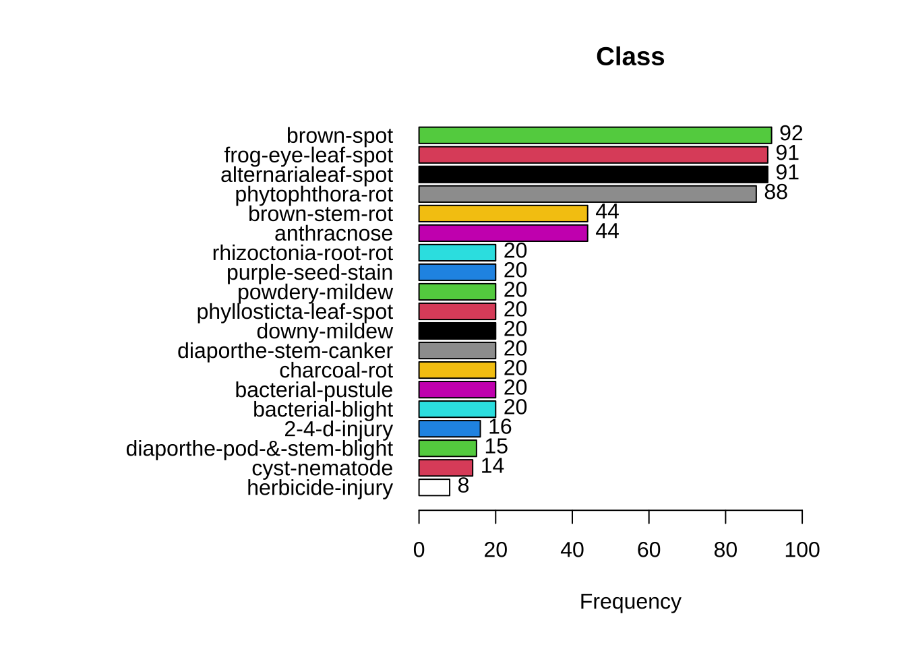
predictor :
Frequency Percent Cum. percent
brown-spot 92 13.5 13.5
frog-eye-leaf-spot 91 13.3 26.8
alternarialeaf-spot 91 13.3 40.1
phytophthora-rot 88 12.9 53.0
brown-stem-rot 44 6.4 59.4
anthracnose 44 6.4 65.9
rhizoctonia-root-rot 20 2.9 68.8
purple-seed-stain 20 2.9 71.7
powdery-mildew 20 2.9 74.7
phyllosticta-leaf-spot 20 2.9 77.6
downy-mildew 20 2.9 80.5
diaporthe-stem-canker 20 2.9 83.5
charcoal-rot 20 2.9 86.4
bacterial-pustule 20 2.9 89.3
bacterial-blight 20 2.9 92.2
2-4-d-injury 16 2.3 94.6
diaporthe-pod-&-stem-blight 15 2.2 96.8
cyst-nematode 14 2.0 98.8
herbicide-injury 8 1.2 100.0
Total 683 100.0 100.0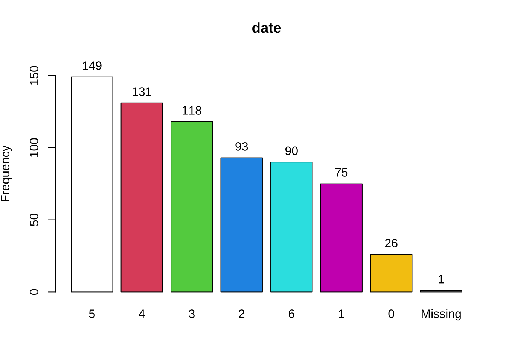
predictor :
Frequency %(NA+) cum.%(NA+) %(NA-) cum.%(NA-)
5 149 21.8 86.7 21.8 86.8
4 131 19.2 64.9 19.2 65.0
3 118 17.3 45.7 17.3 45.7
2 93 13.6 28.4 13.6 28.4
6 90 13.2 99.9 13.2 100.0
1 75 11.0 14.8 11.0 14.8
0 26 3.8 3.8 3.8 3.8
NA's 1 0.1 100.0 0.0 100.0
Total 683 100.0 100.0 100.0 100.0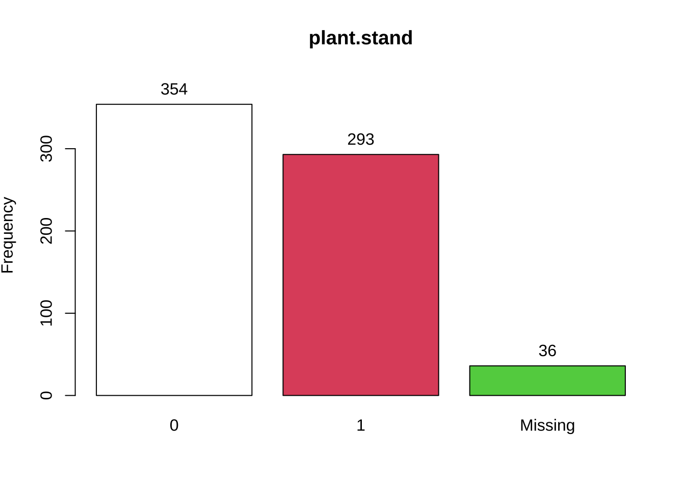
predictor :
Frequency %(NA+) cum.%(NA+) %(NA-) cum.%(NA-)
0 354 51.8 51.8 54.7 54.7
1 293 42.9 94.7 45.3 100.0
NA's 36 5.3 100.0 0.0 100.0
Total 683 100.0 100.0 100.0 100.0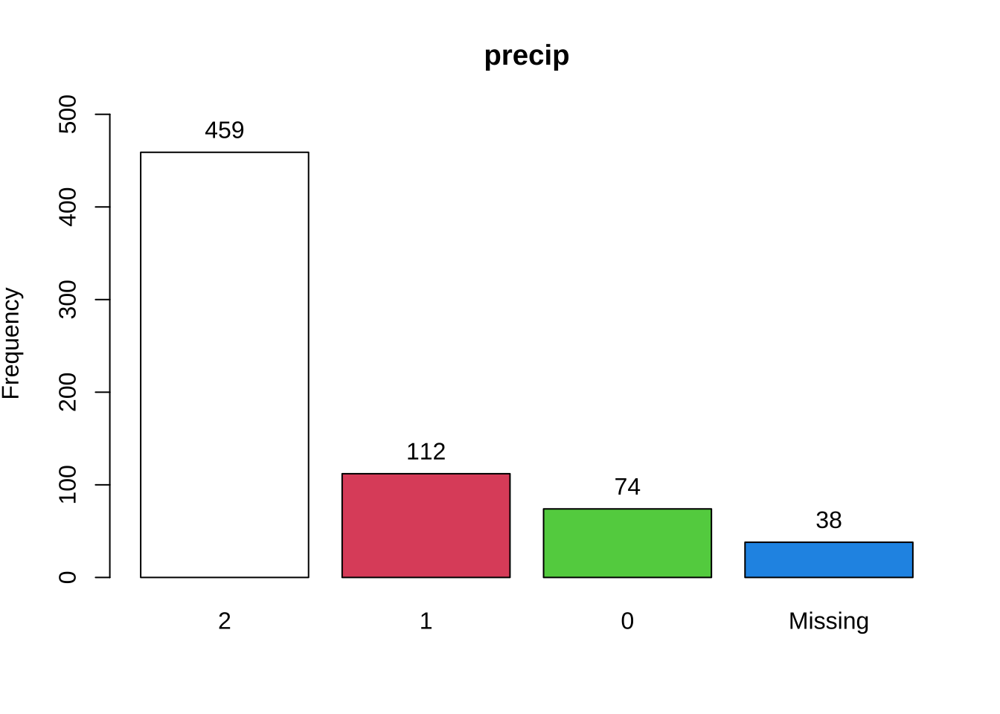
predictor :
Frequency %(NA+) cum.%(NA+) %(NA-) cum.%(NA-)
2 459 67.2 94.4 71.2 100.0
1 112 16.4 27.2 17.4 28.8
0 74 10.8 10.8 11.5 11.5
NA's 38 5.6 100.0 0.0 100.0
Total 683 100.0 100.0 100.0 100.0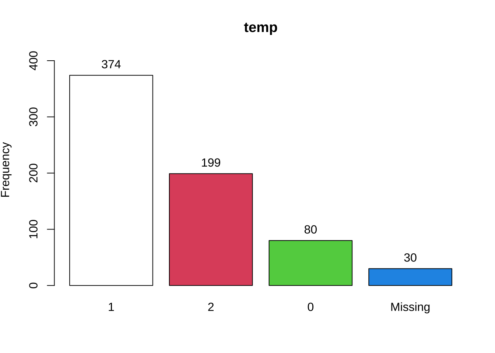
predictor :
Frequency %(NA+) cum.%(NA+) %(NA-) cum.%(NA-)
1 374 54.8 66.5 57.3 69.5
2 199 29.1 95.6 30.5 100.0
0 80 11.7 11.7 12.3 12.3
NA's 30 4.4 100.0 0.0 100.0
Total 683 100.0 100.0 100.0 100.0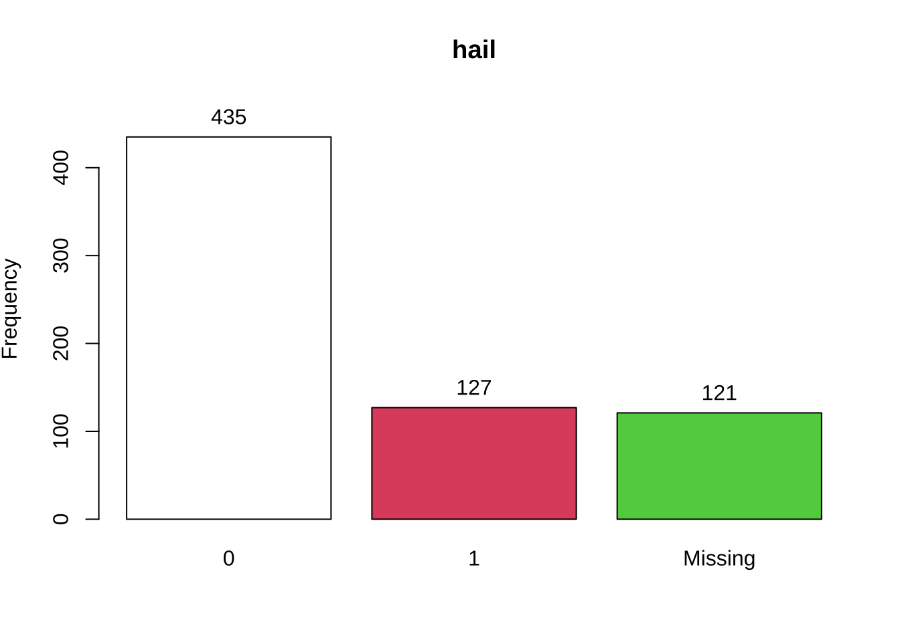
predictor :
Frequency %(NA+) cum.%(NA+) %(NA-) cum.%(NA-)
0 435 63.7 63.7 77.4 77.4
1 127 18.6 82.3 22.6 100.0
NA's 121 17.7 100.0 0.0 100.0
Total 683 100.0 100.0 100.0 100.0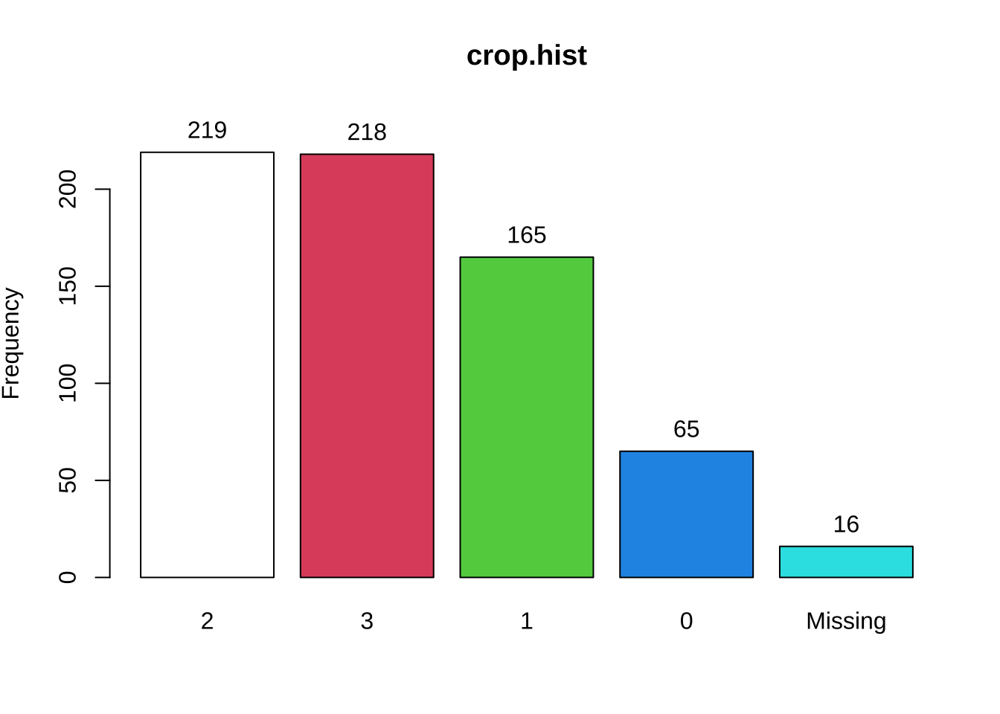
predictor :
Frequency %(NA+) cum.%(NA+) %(NA-) cum.%(NA-)
2 219 32.1 65.7 32.8 67.3
3 218 31.9 97.7 32.7 100.0
1 165 24.2 33.7 24.7 34.5
0 65 9.5 9.5 9.7 9.7
NA's 16 2.3 100.0 0.0 100.0
Total 683 100.0 100.0 100.0 100.0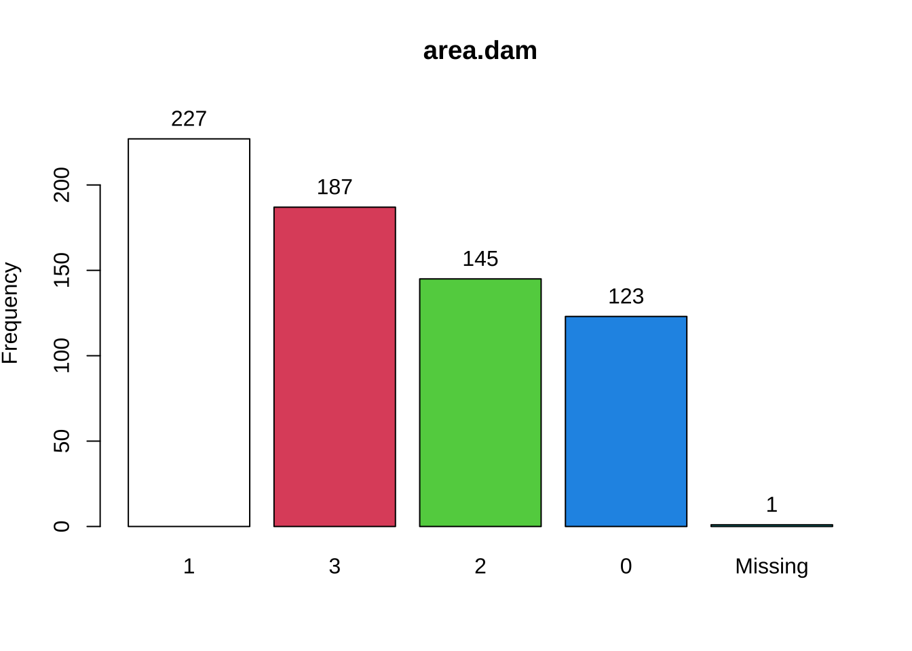
predictor :
Frequency %(NA+) cum.%(NA+) %(NA-) cum.%(NA-)
1 227 33.2 51.2 33.3 51.3
3 187 27.4 99.9 27.4 100.0
2 145 21.2 72.5 21.3 72.6
0 123 18.0 18.0 18.0 18.0
NA's 1 0.1 100.0 0.0 100.0
Total 683 100.0 100.0 100.0 100.0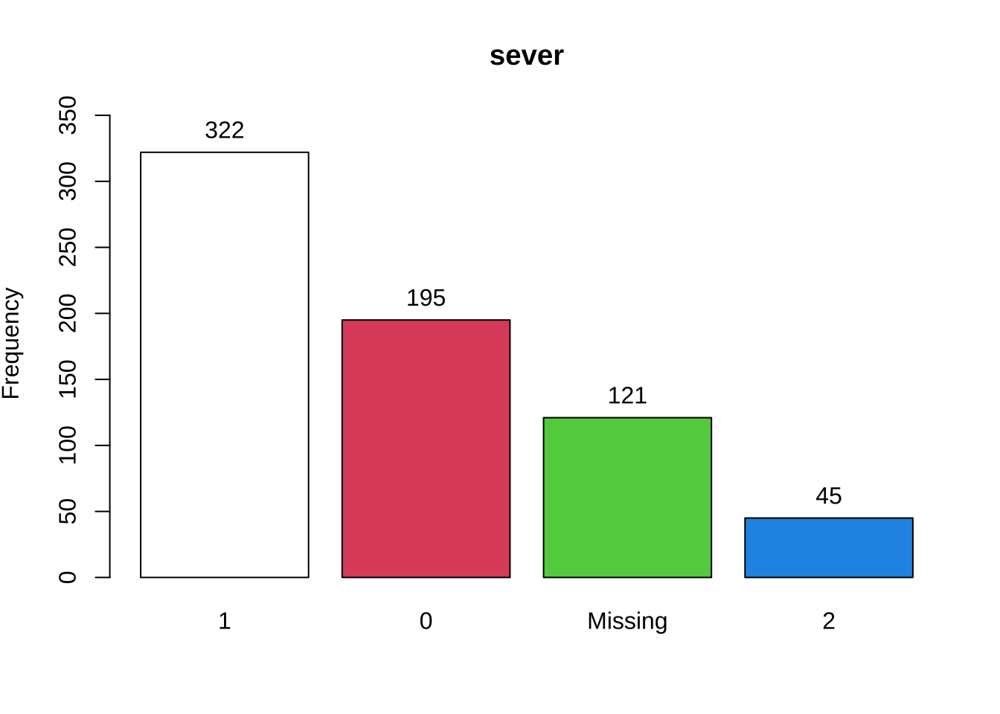
predictor :
Frequency %(NA+) cum.%(NA+) %(NA-) cum.%(NA-)
1 322 47.1 75.7 57.3 92.0
0 195 28.6 28.6 34.7 34.7
NA's 121 17.7 100.0 0.0 100.0
2 45 6.6 82.3 8.0 100.0
Total 683 100.0 100.0 100.0 100.0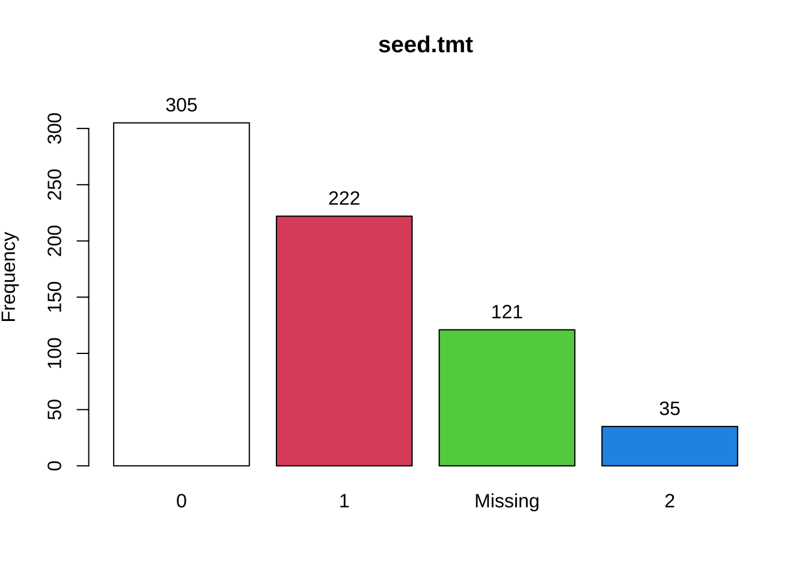
predictor :
Frequency %(NA+) cum.%(NA+) %(NA-) cum.%(NA-)
0 305 44.7 44.7 54.3 54.3
1 222 32.5 77.2 39.5 93.8
NA's 121 17.7 100.0 0.0 100.0
2 35 5.1 82.3 6.2 100.0
Total 683 100.0 100.0 100.0 100.0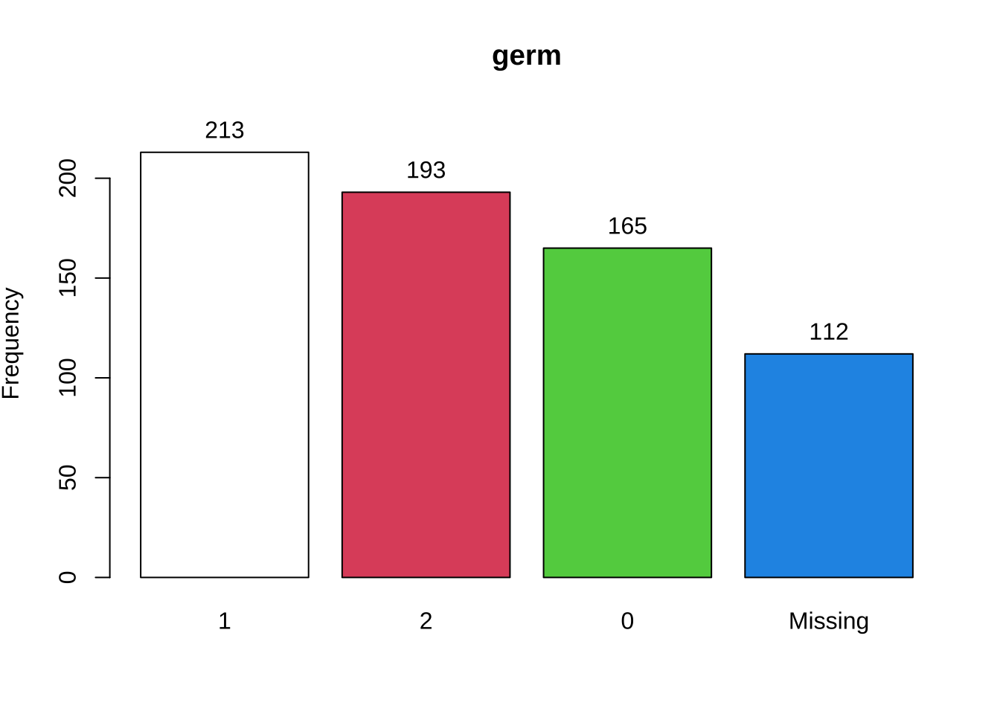
predictor :
Frequency %(NA+) cum.%(NA+) %(NA-) cum.%(NA-)
1 213 31.2 55.3 37.3 66.2
2 193 28.3 83.6 33.8 100.0
0 165 24.2 24.2 28.9 28.9
NA's 112 16.4 100.0 0.0 100.0
Total 683 100.0 100.0 100.0 100.0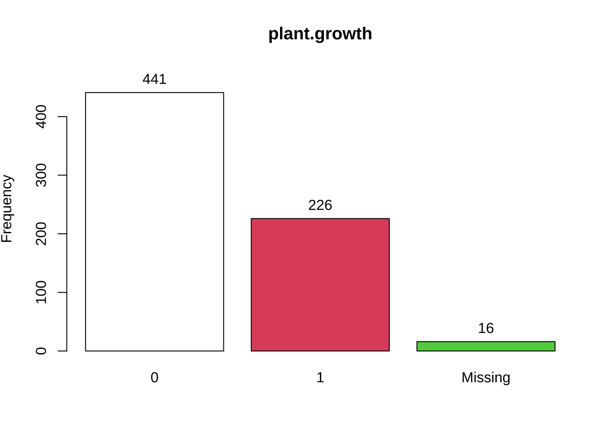
predictor :
Frequency %(NA+) cum.%(NA+) %(NA-) cum.%(NA-)
0 441 64.6 64.6 66.1 66.1
1 226 33.1 97.7 33.9 100.0
NA's 16 2.3 100.0 0.0 100.0
Total 683 100.0 100.0 100.0 100.0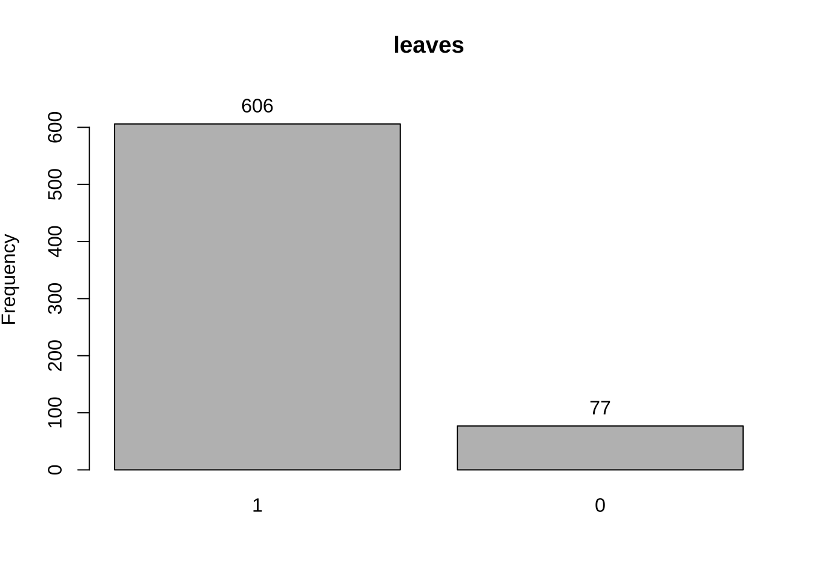
predictor :
Frequency Percent Cum. percent
1 606 88.7 88.7
0 77 11.3 100.0
Total 683 100.0 100.0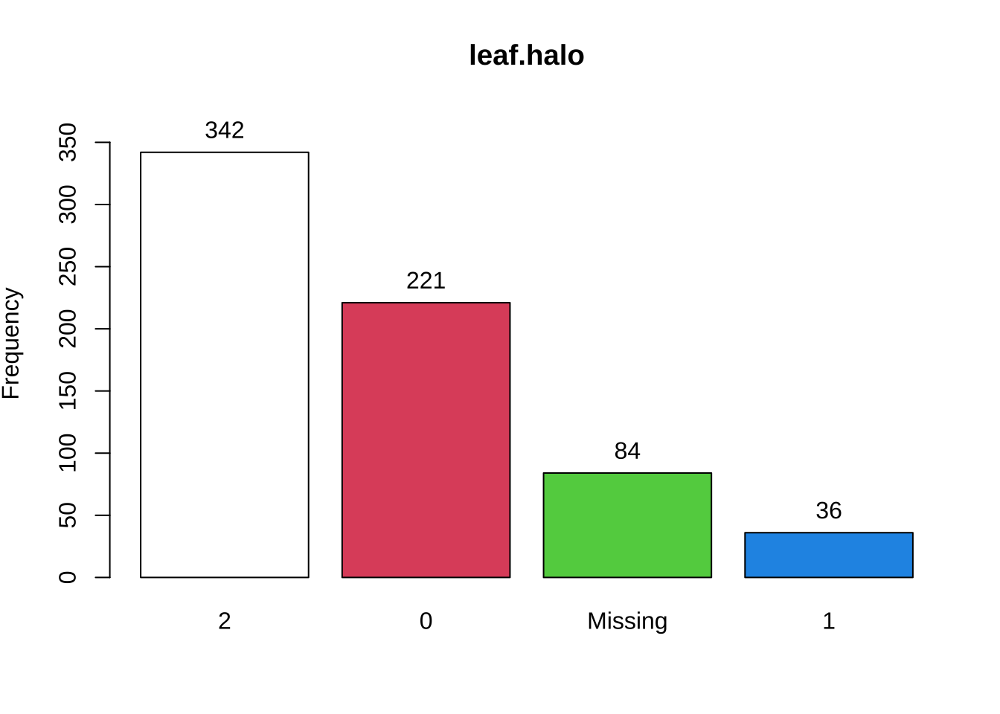
predictor :
Frequency %(NA+) cum.%(NA+) %(NA-) cum.%(NA-)
2 342 50.1 87.7 57.1 100.0
0 221 32.4 32.4 36.9 36.9
NA's 84 12.3 100.0 0.0 100.0
1 36 5.3 37.6 6.0 42.9
Total 683 100.0 100.0 100.0 100.0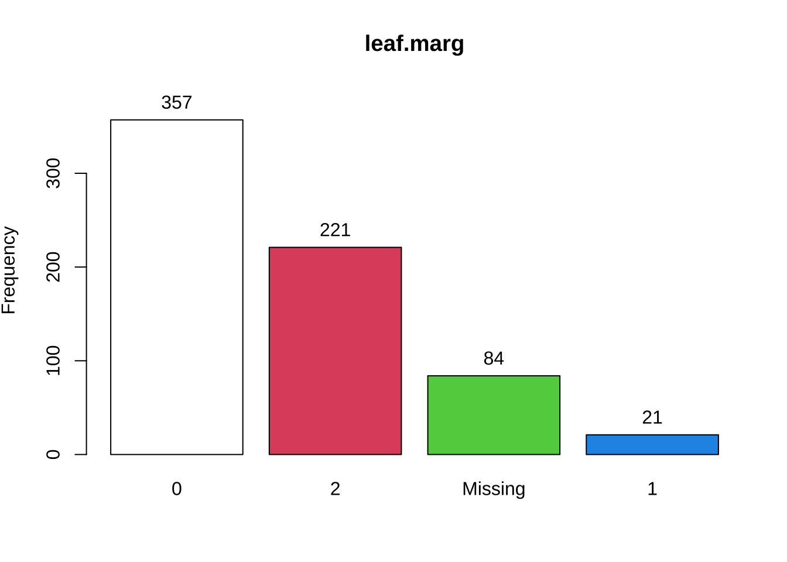
predictor :
Frequency %(NA+) cum.%(NA+) %(NA-) cum.%(NA-)
0 357 52.3 52.3 59.6 59.6
2 221 32.4 87.7 36.9 100.0
NA's 84 12.3 100.0 0.0 100.0
1 21 3.1 55.3 3.5 63.1
Total 683 100.0 100.0 100.0 100.0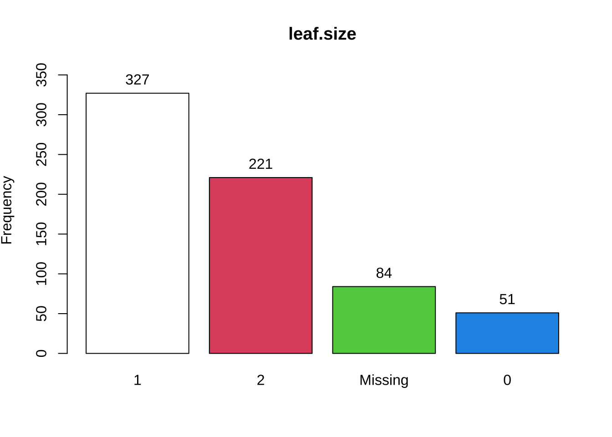
predictor :
Frequency %(NA+) cum.%(NA+) %(NA-) cum.%(NA-)
1 327 47.9 55.3 54.6 63.1
2 221 32.4 87.7 36.9 100.0
NA's 84 12.3 100.0 0.0 100.0
0 51 7.5 7.5 8.5 8.5
Total 683 100.0 100.0 100.0 100.0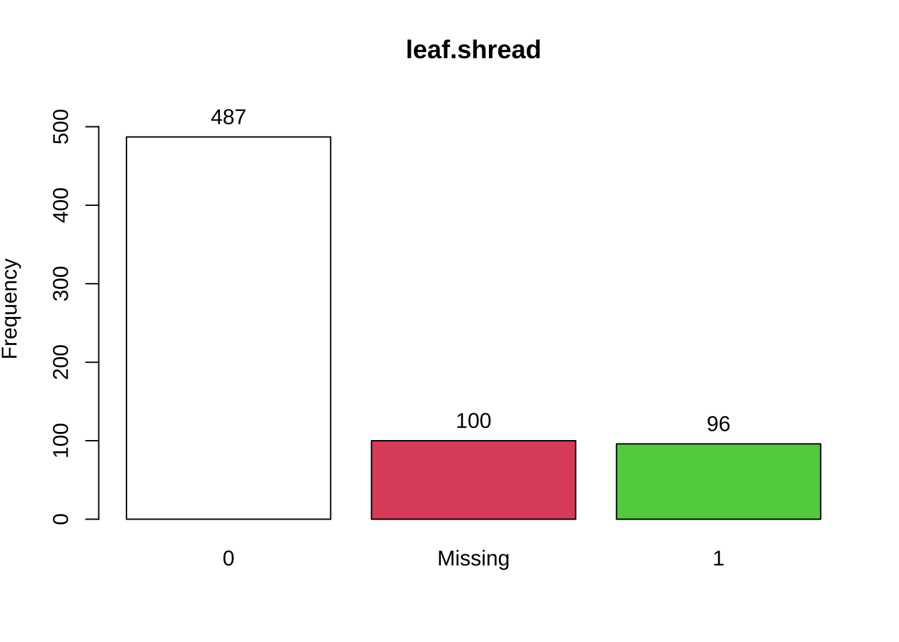
predictor :
Frequency %(NA+) cum.%(NA+) %(NA-) cum.%(NA-)
0 487 71.3 71.3 83.5 83.5
NA's 100 14.6 100.0 0.0 100.0
1 96 14.1 85.4 16.5 100.0
Total 683 100.0 100.0 100.0 100.0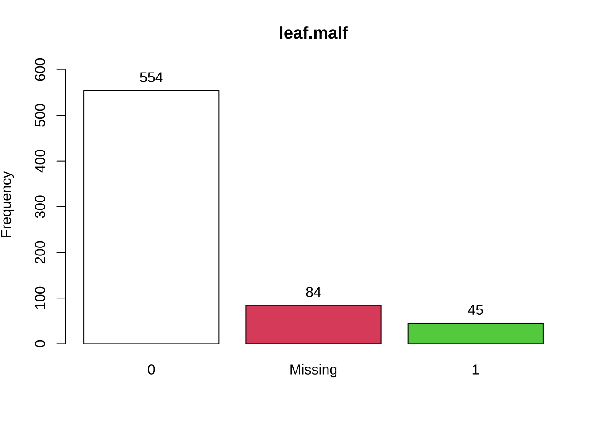
predictor :
Frequency %(NA+) cum.%(NA+) %(NA-) cum.%(NA-)
0 554 81.1 81.1 92.5 92.5
NA's 84 12.3 100.0 0.0 100.0
1 45 6.6 87.7 7.5 100.0
Total 683 100.0 100.0 100.0 100.0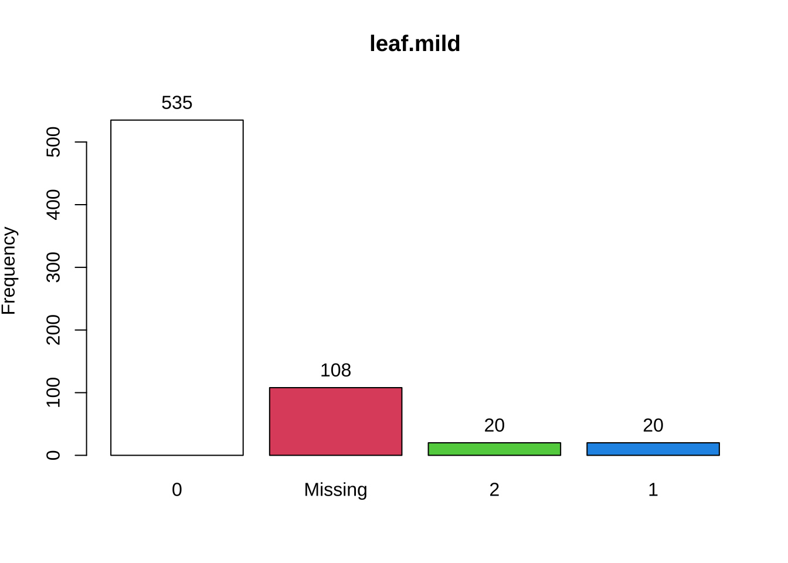
predictor :
Frequency %(NA+) cum.%(NA+) %(NA-) cum.%(NA-)
0 535 78.3 78.3 93.0 93.0
NA's 108 15.8 100.0 0.0 100.0
1 20 2.9 81.3 3.5 96.5
2 20 2.9 84.2 3.5 100.0
Total 683 100.0 100.0 100.0 100.0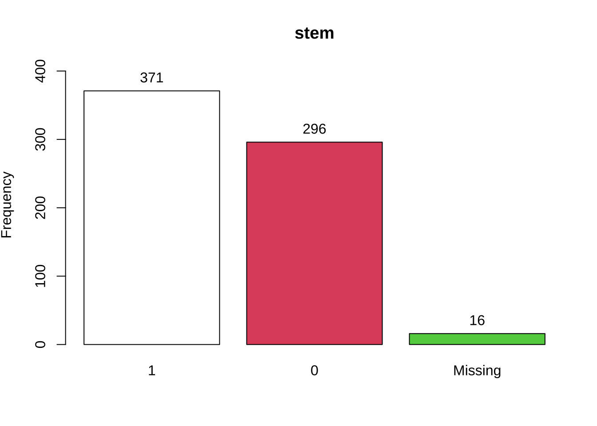
predictor :
Frequency %(NA+) cum.%(NA+) %(NA-) cum.%(NA-)
1 371 54.3 97.7 55.6 100.0
0 296 43.3 43.3 44.4 44.4
NA's 16 2.3 100.0 0.0 100.0
Total 683 100.0 100.0 100.0 100.0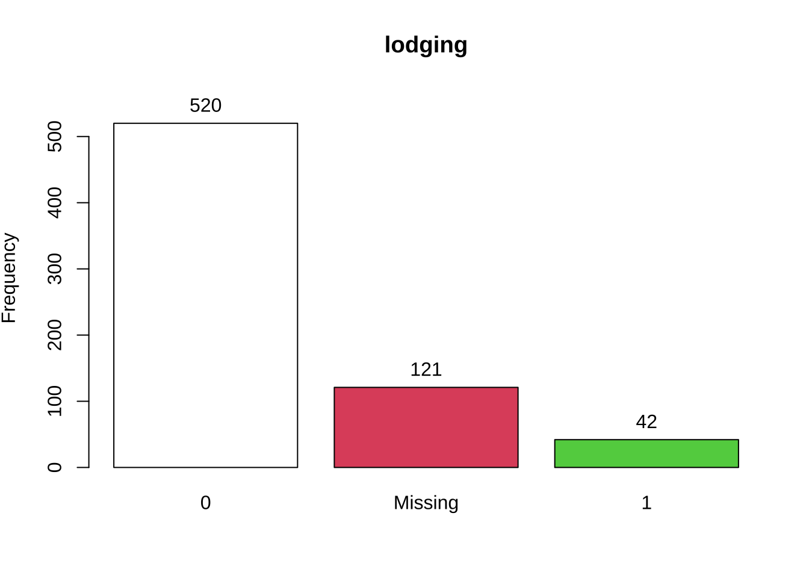
predictor :
Frequency %(NA+) cum.%(NA+) %(NA-) cum.%(NA-)
0 520 76.1 76.1 92.5 92.5
NA's 121 17.7 100.0 0.0 100.0
1 42 6.1 82.3 7.5 100.0
Total 683 100.0 100.0 100.0 100.0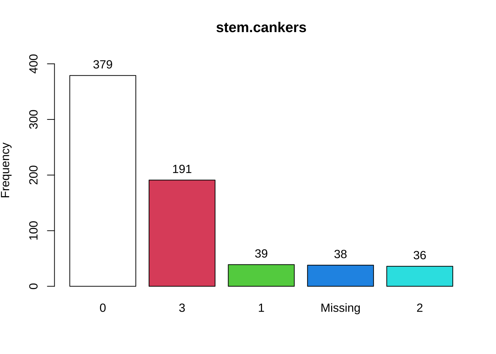
predictor :
Frequency %(NA+) cum.%(NA+) %(NA-) cum.%(NA-)
0 379 55.5 55.5 58.8 58.8
3 191 28.0 94.4 29.6 100.0
1 39 5.7 61.2 6.0 64.8
NA's 38 5.6 100.0 0.0 100.0
2 36 5.3 66.5 5.6 70.4
Total 683 100.0 100.0 100.0 100.0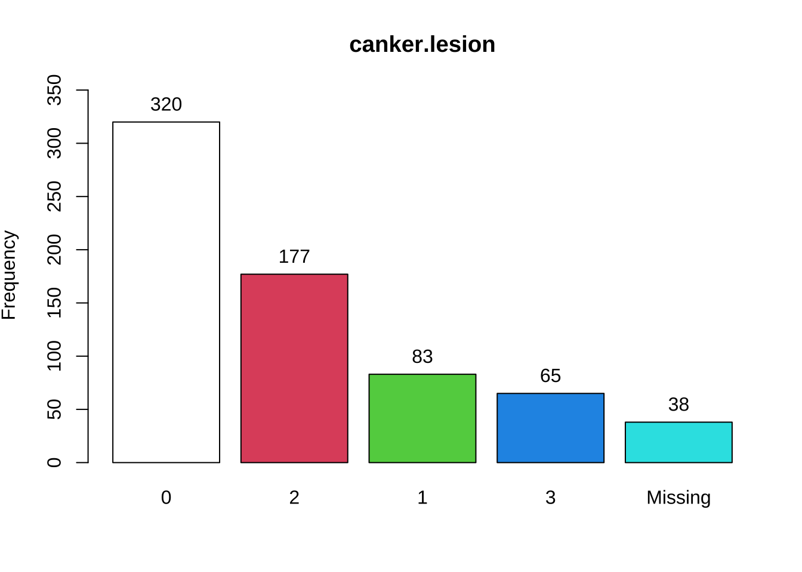
predictor :
Frequency %(NA+) cum.%(NA+) %(NA-) cum.%(NA-)
0 320 46.9 46.9 49.6 49.6
2 177 25.9 84.9 27.4 89.9
1 83 12.2 59.0 12.9 62.5
3 65 9.5 94.4 10.1 100.0
NA's 38 5.6 100.0 0.0 100.0
Total 683 100.0 100.0 100.0 100.0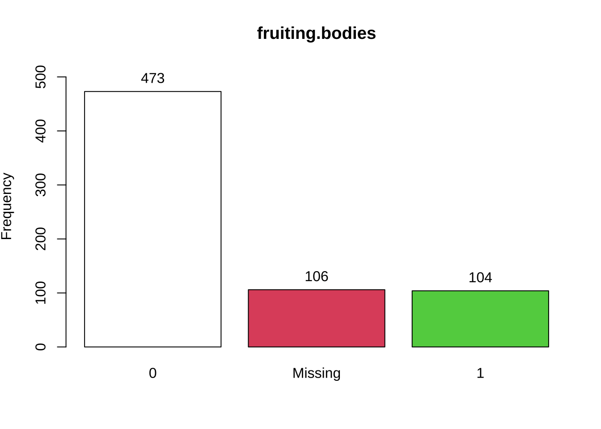
predictor :
Frequency %(NA+) cum.%(NA+) %(NA-) cum.%(NA-)
0 473 69.3 69.3 82 82
NA's 106 15.5 100.0 0 100
1 104 15.2 84.5 18 100
Total 683 100.0 100.0 100 100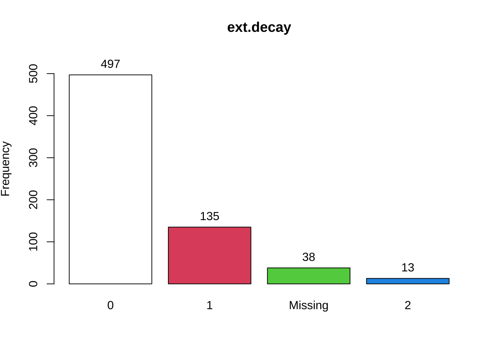
predictor :
Frequency %(NA+) cum.%(NA+) %(NA-) cum.%(NA-)
0 497 72.8 72.8 77.1 77.1
1 135 19.8 92.5 20.9 98.0
NA's 38 5.6 100.0 0.0 100.0
2 13 1.9 94.4 2.0 100.0
Total 683 100.0 100.0 100.0 100.0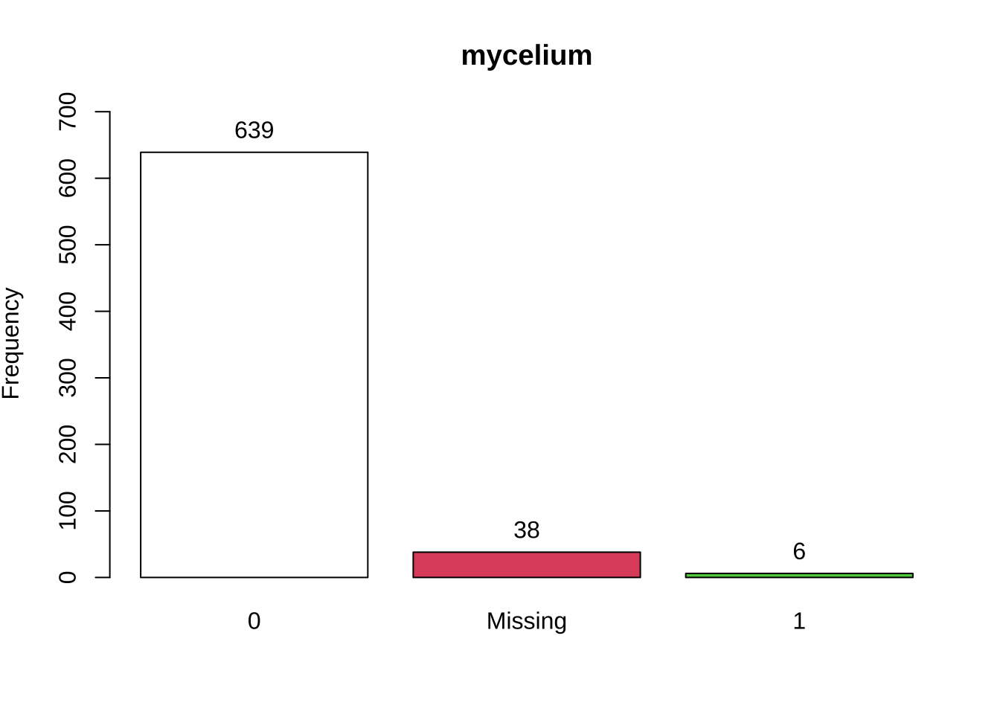
predictor :
Frequency %(NA+) cum.%(NA+) %(NA-) cum.%(NA-)
0 639 93.6 93.6 99.1 99.1
NA's 38 5.6 100.0 0.0 100.0
1 6 0.9 94.4 0.9 100.0
Total 683 100.0 100.0 100.0 100.0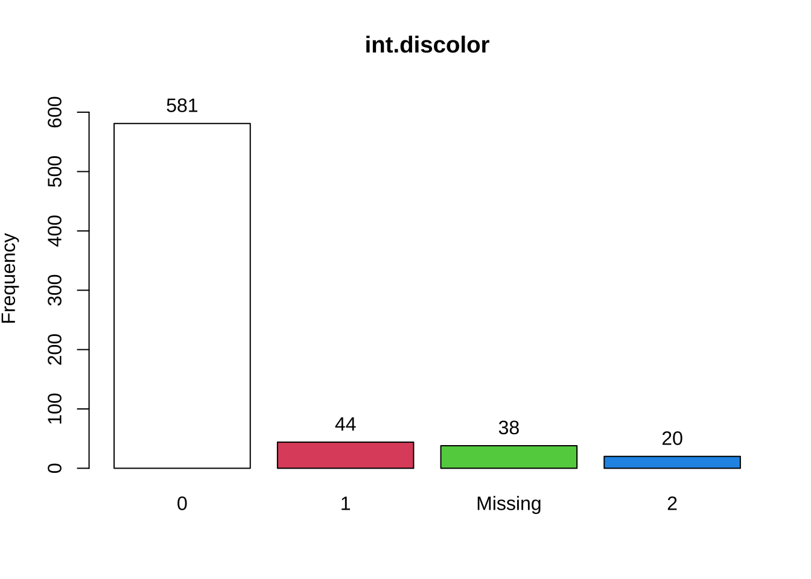
predictor :
Frequency %(NA+) cum.%(NA+) %(NA-) cum.%(NA-)
0 581 85.1 85.1 90.1 90.1
1 44 6.4 91.5 6.8 96.9
NA's 38 5.6 100.0 0.0 100.0
2 20 2.9 94.4 3.1 100.0
Total 683 100.0 100.0 100.0 100.0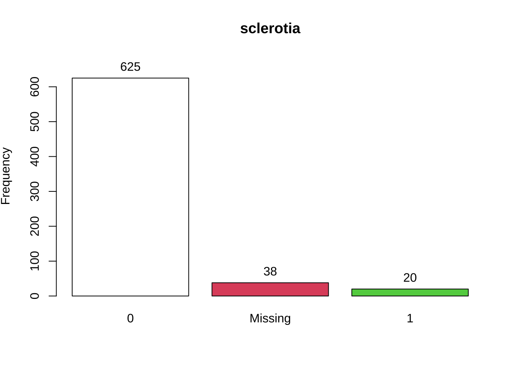
predictor :
Frequency %(NA+) cum.%(NA+) %(NA-) cum.%(NA-)
0 625 91.5 91.5 96.9 96.9
NA's 38 5.6 100.0 0.0 100.0
1 20 2.9 94.4 3.1 100.0
Total 683 100.0 100.0 100.0 100.0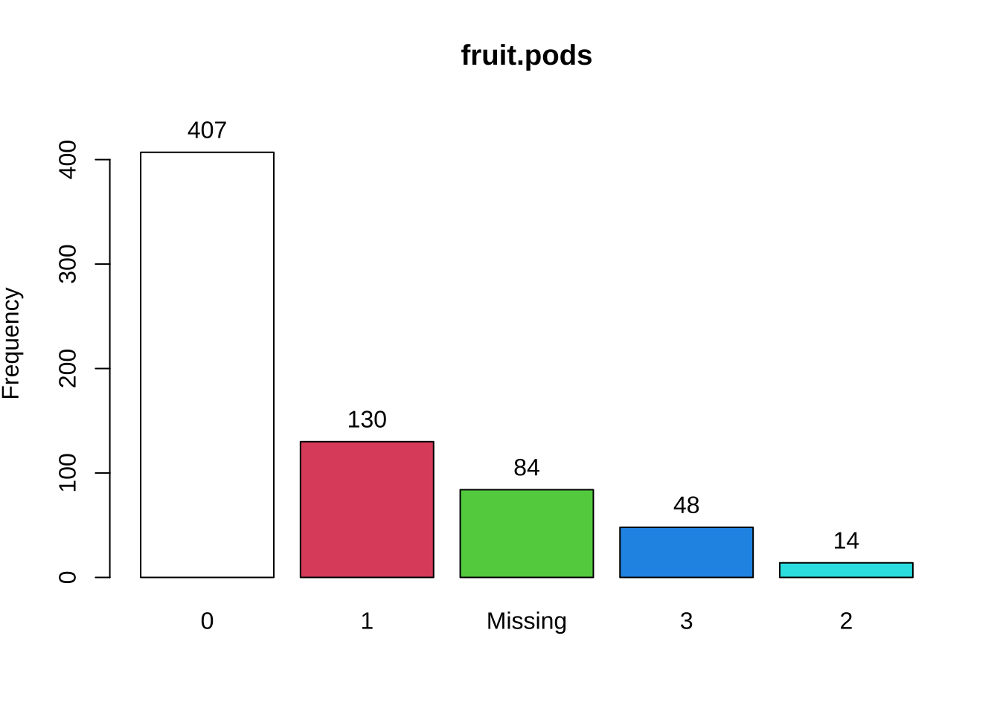
predictor :
Frequency %(NA+) cum.%(NA+) %(NA-) cum.%(NA-)
0 407 59.6 59.6 67.9 67.9
1 130 19.0 78.6 21.7 89.6
NA's 84 12.3 100.0 0.0 100.0
3 48 7.0 87.7 8.0 100.0
2 14 2.0 80.7 2.3 92.0
Total 683 100.0 100.0 100.0 100.0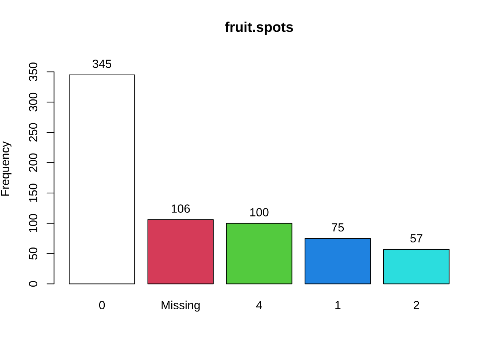
predictor :
Frequency %(NA+) cum.%(NA+) %(NA-) cum.%(NA-)
0 345 50.5 50.5 59.8 59.8
NA's 106 15.5 100.0 0.0 100.0
4 100 14.6 84.5 17.3 100.0
1 75 11.0 61.5 13.0 72.8
2 57 8.3 69.8 9.9 82.7
Total 683 100.0 100.0 100.0 100.0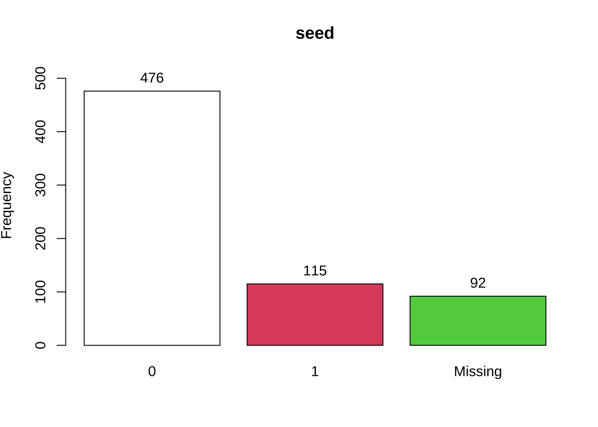
predictor :
Frequency %(NA+) cum.%(NA+) %(NA-) cum.%(NA-)
0 476 69.7 69.7 80.5 80.5
1 115 16.8 86.5 19.5 100.0
NA's 92 13.5 100.0 0.0 100.0
Total 683 100.0 100.0 100.0 100.0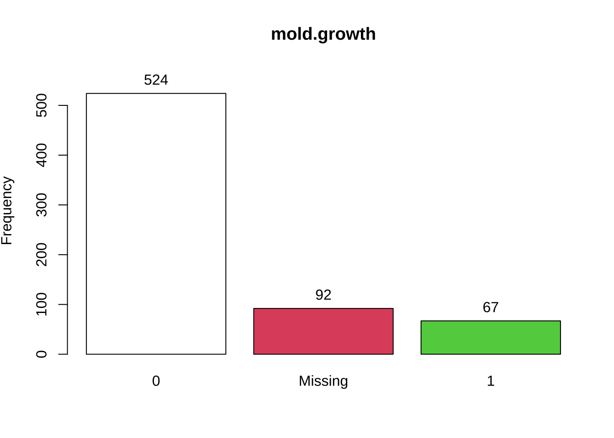
predictor :
Frequency %(NA+) cum.%(NA+) %(NA-) cum.%(NA-)
0 524 76.7 76.7 88.7 88.7
NA's 92 13.5 100.0 0.0 100.0
1 67 9.8 86.5 11.3 100.0
Total 683 100.0 100.0 100.0 100.0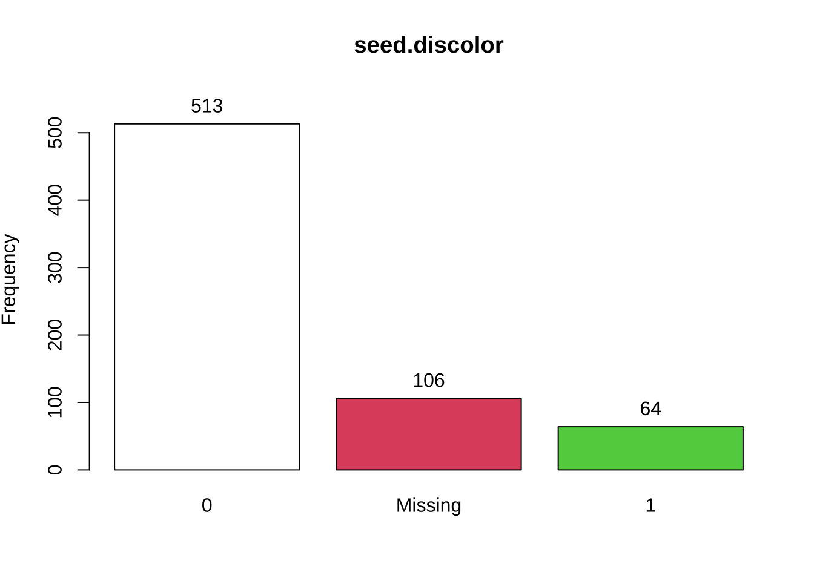
predictor :
Frequency %(NA+) cum.%(NA+) %(NA-) cum.%(NA-)
0 513 75.1 75.1 88.9 88.9
NA's 106 15.5 100.0 0.0 100.0
1 64 9.4 84.5 11.1 100.0
Total 683 100.0 100.0 100.0 100.0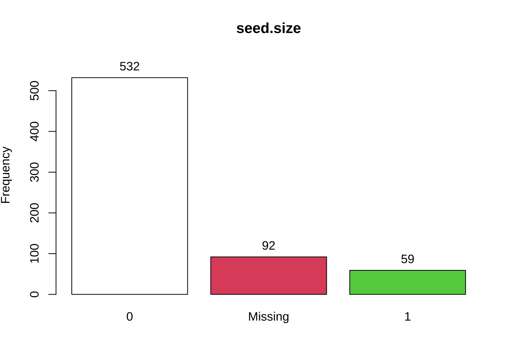
predictor :
Frequency %(NA+) cum.%(NA+) %(NA-) cum.%(NA-)
0 532 77.9 77.9 90 90
NA's 92 13.5 100.0 0 100
1 59 8.6 86.5 10 100
Total 683 100.0 100.0 100 100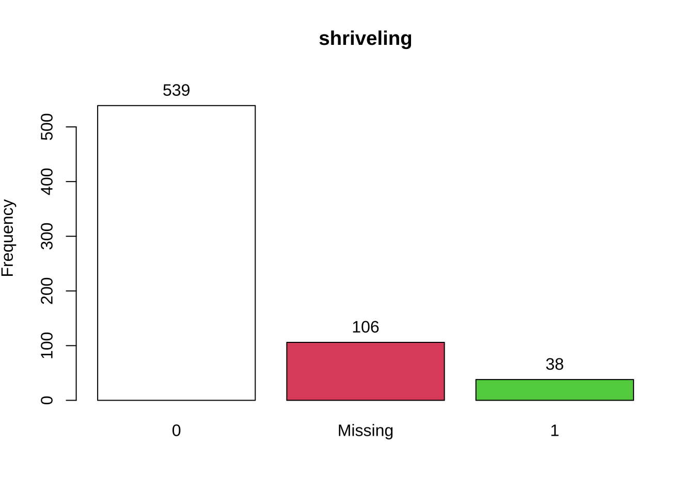
predictor :
Frequency %(NA+) cum.%(NA+) %(NA-) cum.%(NA-)
0 539 78.9 78.9 93.4 93.4
NA's 106 15.5 100.0 0.0 100.0
1 38 5.6 84.5 6.6 100.0
Total 683 100.0 100.0 100.0 100.0Problematic distributions can be seen for variables: int.discolor, leaf.malf, leaf.mild, leaves, lodging, mycelium, mold.growth, roots, sclerotia, seed.discolor, seed.size, and shriveling. Many of these variables only have two factors that is dominated by a single factor.
2c) Develop a strategy for handling missing data, either by eliminating predictors or imputation.
To handle missing data, my strategy would drop variables with degenerate distributions and impute missing values using the k-nearest neighbors algorithm. The algorithm would determine what observations are normally grouped together based on complete observations in the dataset.
Problem 3 - Oil dataset
Import Data
data(oil)Examine data structure
str(oilType) Factor w/ 7 levels "A","B","C","D",..: 1 1 1 1 1 1 1 1 1 1 ...Oil Type data table
table(oilType)oilType
A B C D E F G
37 26 3 7 11 10 2 3a) Use the sample function in base R to create a completely random sample of 60 oils. How closely do the frequencies of the random sample match the original samples? Repeat this procedure several times of understand the variation in the sampling process.
samp1 <- sample(oilType, 60, replace = FALSE, prob = NULL)
table(samp1)samp1
A B C D E F G
24 17 3 4 6 6 0 samp2 <- sample(oilType, 60, replace = FALSE, prob = NULL)
table(samp2)samp2
A B C D E F G
24 18 2 5 6 4 1 samp3 <- sample(oilType, 60, replace = FALSE, prob = NULL)
table(samp3)samp3
A B C D E F G
20 18 3 7 6 5 1 samp4 <- sample(oilType, 60, replace = FALSE, prob = NULL)
table(samp4)samp4
A B C D E F G
22 16 2 4 9 6 1 The sampling function produces accurate random samples, and the frequencies of these samples closely match the original, but there is some minor variation that is insignificant.
3b) Use the caret package function createDataPartition to create a stratified random sample. How does this compare to completely random samples?
set.seed(318)
strat_samp <- createDataPartition(oilType, p = .70, times = 20)
strat_samp <- lapply(strat_samp, function(x, y) table(y[x]), y = oilType)
head(strat_samp, 3)$Resample01
A B C D E F G
26 19 3 5 8 7 2
$Resample02
A B C D E F G
26 19 3 5 8 7 2
$Resample03
A B C D E F G
26 19 3 5 8 7 2 This sampling technique allocates the equal samples to each class for every round of sampling to minimize the variance of each sample.
3c) With such a small samples size, what are the options for determining performance of the model? Should a test set be used?
Leave one out cross validation is the best option for assessing the performance of a model when the dataset is small and unbalanced. This method uses every data point as a test set once with the rest as the training set. This provides the same number of performance estimates as data points that can be averaged to get a more precise measure. This method uses a test set.
3d) Try different samples sizes and accuracy rates to understand the trade-off between the uncertainty in the results, the model performance, and the test set size.
binom.test(20, 76)
Exact binomial test
data: 20 and 76
number of successes = 20, number of trials = 76, p-value = 4.369e-05
alternative hypothesis: true probability of success is not equal to 0.5
95 percent confidence interval:
0.1687394 0.3767601
sample estimates:
probability of success
0.2631579 binom.test(45, 76)
Exact binomial test
data: 45 and 76
number of successes = 45, number of trials = 76, p-value = 0.1354
alternative hypothesis: true probability of success is not equal to 0.5
95 percent confidence interval:
0.4732913 0.7035155
sample estimates:
probability of success
0.5921053 binom.test(15, 76)
Exact binomial test
data: 15 and 76
number of successes = 15, number of trials = 76, p-value = 9.843e-08
alternative hypothesis: true probability of success is not equal to 0.5
95 percent confidence interval:
0.1148853 0.3045513
sample estimates:
probability of success
0.1973684 As we increase the number of sample sizes, the accuracy of our model increases. The width of our 95% confidence interval and our p-value also increases, indicating that more samples can decrease the significance of our predictor.
4) Briefly discuss what is the bias-variance tradeoff in statistics and predictive modeling.
Bias and variance are the two main components of prediction errors in a model. Bias errors are the difference between a model’s predictions and actual values. These errors arise when the model does not adequately learn the patterns of our data. The model is oversimplified and not accounting for all features, underfitting the data. Variance errors occur when the model memorizes the data rather than learn, causing the target function’s estimate to substantially change with different training data. The model fails to make generalizations about data it hasn’t seen, overfitting the data. The bias-variance trade-off is the attempt to balance between errors caused from bias vs. variance.